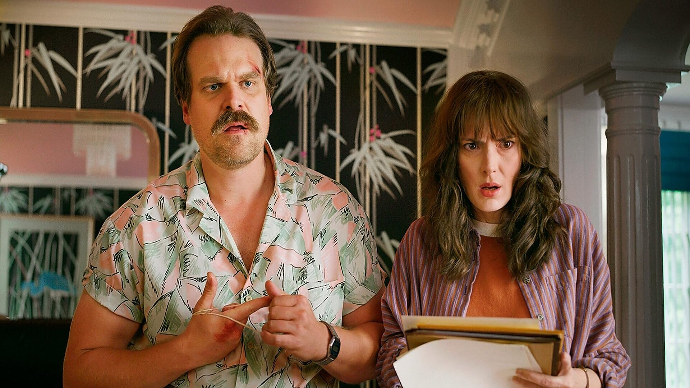
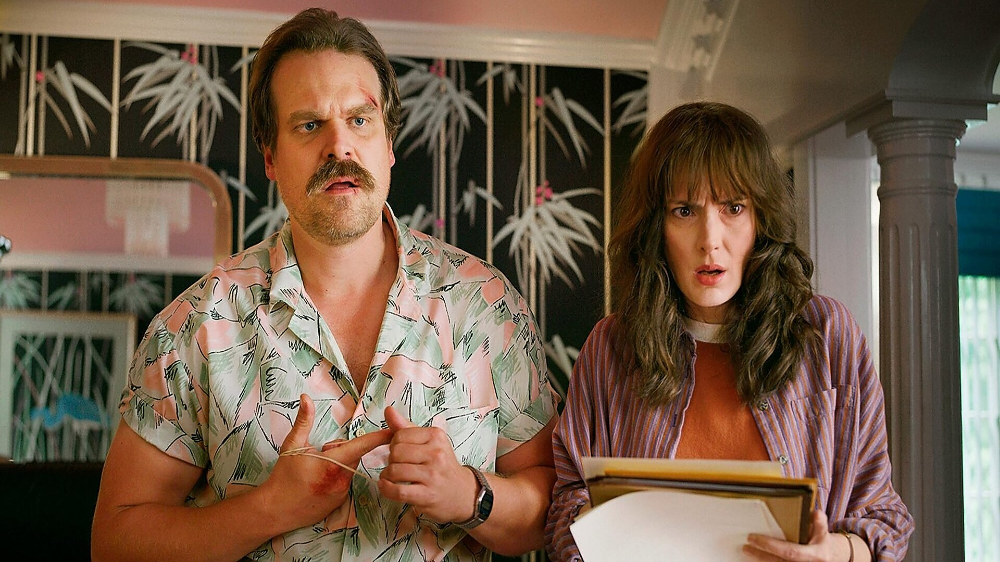

018-7610020
 

Hopper was Chief of Police in the small, sleepy town of Hawkins, Indiana, where he used to live out a carefree existence - yet haunted by a troubled past. After an old friend, Joyce Byers, reported that her son, Will, had mysteriously disappeared, Hopper's life became infinitely more complicated. He began to realize Will's disappearance was caused by an experiment at Hawkins National Laboratory and helped Joyce rescue her son from an alternate dimension called the Upside Down.
Later, Hopper found Eleven in the woods. He took her in and allowed her to live in his cabin. He kept her presence in his cabin a secret. Living together for almost a year, the two formed a father-daughter bond. After local pumpkin patches began to rot, Hopper discovered that corrupted tunnels beneath Hawkins were causing the decay. Following the massacre at Hawkins Lab, Hopper and Eleven closed the Mind Flayer's Gate. Eventually, Hopper adopted Eleven. He took her to the Snow Ball. After being adopted, Eleven was able to change her name from Jane Ives to Jane Hopper, though she still prefers to be called Eleven or "El".